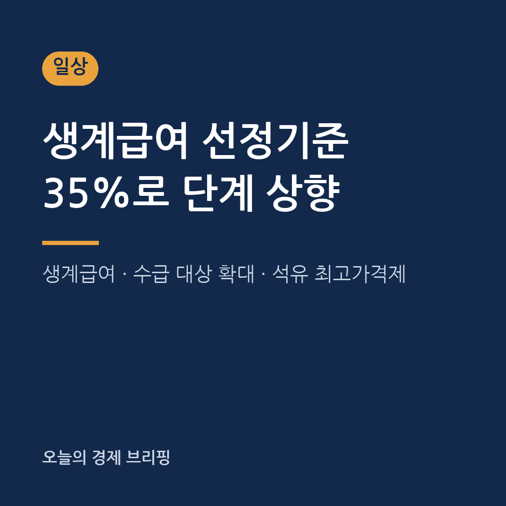
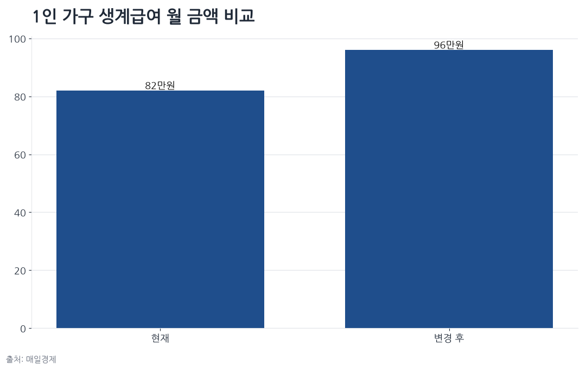

2026-11-23-1854-tistory 발행 키트 · 이 페이지는 검색에 노출되지 않습니다.
제목
카테고리
일상태그
본문 (그림·표 포함)
휴대폰 블로그 앱에서는 그림이 같이 붙지 않을 수 있어요. 그때는 [글자만 복사] 후 아래 이미지를 저장해 [그래프1]·[표1] 자리에 첨부하세요.

핵심 결론부터 정리하면, 정부가 생계급여 선정 기준을 기준중위소득 32%에서 2030년까지 35%로 단계적으로 올리기로 했습니다. 이에 따라 수급 대상이 27만명 늘어나며, 1인 가구 기준 금액은 월 82만원에서 96만원으로 제시됐습니다. 아울러 정부는 석유 최고가격제를 내년에도 일정 기간 유지할 방침입니다.
▶ 배경: 생계급여란 무엇인가
생계급여는 소득이 일정 수준에 못 미치는 가구에 생활에 필요한 비용을 지급하는 기초생활보장 급여입니다. 선정 기준은 기준중위소득(전체 가구를 소득 순서대로 줄 세웠을 때 가운데에 위치한 가구의 소득)을 바탕으로 정해집니다.
현재 이 기준선은 기준중위소득의 32%입니다. 소득이 이 선보다 낮은 가구가 급여 대상이 되므로, 비율을 올리면 대상 범위가 자연스럽게 넓어집니다.
▶ 핵심 내용: 무엇이 바뀌나
보도에 따르면 기준선은 2030년까지 35%로 한 번에 오르지 않고 단계적으로 상향됩니다. 이 과정에서 대상자는 27만명 늘어나는 것으로 전해졌습니다.
생계급여 변경 요약
| 구분 | 현재 | 변경 |
|---|---|---|
| 선정 기준(기준중위소득) | 32% | 2030년까지 35% |
| 수급 대상 | 기존 대상 | 27만명 확대 |
| 1인 가구 월 금액 | 82만원 | 96만원 |
| 중증장애인 가구 판단 | 현행 방식 | 내년 하반기부터 변경 |
출처: 매일경제
금액 측면에서는 1인 가구 월 82만원이 96만원으로 오르는 것으로 소개됐습니다. 이 수치는 1인 가구에 한정된 것이며, 가구원 수별 금액은 이번에 확인한 자료에 나와 있지 않습니다.

▶ 중증장애인 가구 판단 방식도 조정
내년 하반기부터는 중증장애인 가구의 생계급여·의료급여 수급 여부를 판단하는 방식이 달라집니다. 부모와 관련된 판단 요소가 바뀌는 것으로 보도됐으나, 구체적인 조건은 확인하지 못했습니다.
해당 가구라면 시행 시점에 맞춰 관할 주민센터(읍면동 행정복지센터)의 안내를 받아 보시기 바랍니다.
▶ 영향: 생활비와 물가 환경
기준이 오르면 지금까지 소득이 근소하게 높아 지원에서 빠졌던 가구가 새로 편입될 수 있습니다. 다만 단계적 상향이므로 시행 시기별로 적용 범위가 달라질 수 있습니다.
한편 석유 최고가격제는 지난 3월부터 시행돼 온 제도입니다. 중동 전쟁으로 국제 유가가 급등한 상황에서 물류비와 난방비 등 서민 부담이 커지는 것을 고려해 내년에도 일정 기간 이어간다는 방침입니다. 유지 기간의 구체적인 범위는 확인되지 않았습니다.
▶ 확인할 점
첫째, 가구 소득과 재산이 새 선정 기준에 해당할 수 있는지 주민센터에서 상담받는 것이 좋습니다.
둘째, 급여는 신청을 해야 심사가 진행되는 구조이므로, 주변에 대상이 될 만한 가구가 있다면 안내해 주는 것이 도움이 됩니다.
셋째, 기준 상향은 2030년까지 이어지는 단계적 조치입니다. 각 연도별 시행 시점을 확인해야 합니다.
▶ 정리
1. 생계급여 선정 기준은 기준중위소득 32%에서 2030년까지 35%로 오릅니다.
2. 대상자는 27만명 늘고, 1인 가구 기준 월 82만원에서 96만원으로 제시됐습니다.
3. 석유 최고가격제는 내년에도 일정 기간 유지될 예정이며, 개별 해당 여부는 주민센터에서 확인해야 합니다.
출처 (본문 맨 아래에 붙여넣기 권장)
- 매일경제, 생계급여 대상 확대 관련 기사, https://www.mk.co.kr/news/economy/12216386 - 매일경제, 석유 최고가격제 유지 관련 기사, https://www.mk.co.kr/news/economy/12216384